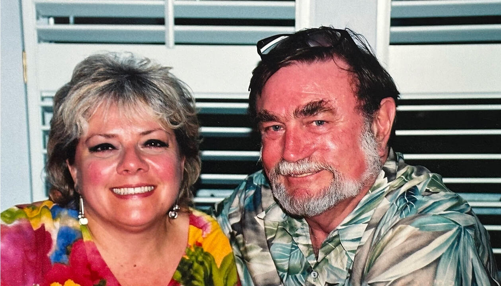
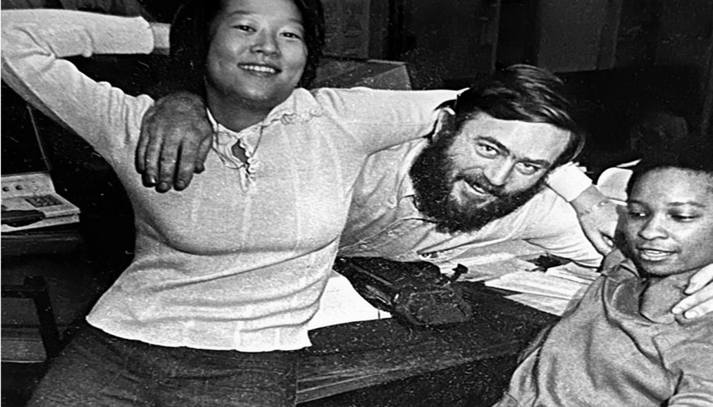
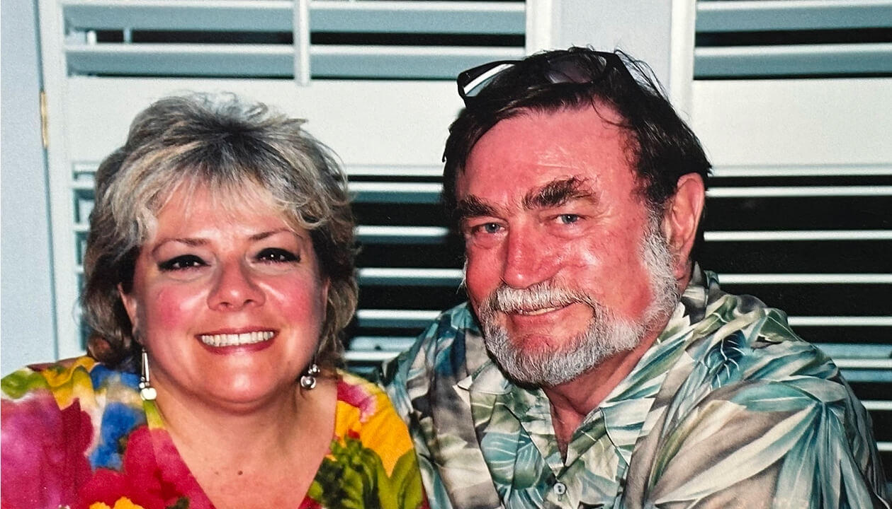
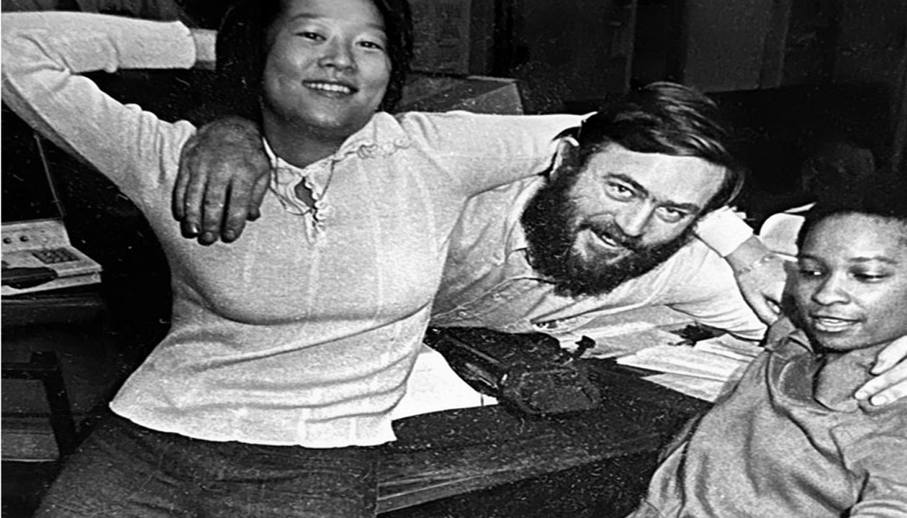

In Loving Memory of James F.Wieck
(1944 - 2024)
Honoring the visionary leader, friend, and founder whose legacy continues to inspire us.
A Life as Good as His Word
It is with profound sadness that we share the passing of James F. Wieck, co-founder and chairman of the company that proudly bears his name. Jim passed away on November 21, 2024, at the age of 80, following a courageous battle with lymphoma.
Jim began his illustrious career in journalism at United Press International, where he served as a reporter, editor, bureau manager and troubleshooter across the United States. Known for his unwavering integrity and natural ability to connect with people, Jim’s reputation for honesty quickly became a hallmark of his character.
In 1991 Jim co-founded Wieck with Travis Hughs, then brought in Tim Roberts and Marge Boatright to launch the company. Under his visionary leadership, Wieck transformed from an analog image distribution service into an industry leader in digital media libraries and social media consulting.
Find the best employees and then get out of the way.
James F. Wieck
Founder
Jim’s mentorship made a lasting impact on journalism and everyone he worked with. His influence extended far beyond his titles. He shaped countless careers, leaving behind a generation of professionals who carry forward his values.
His wit was matched only by his deep sense of responsibility to do things the right way. Jim was like the voice in your head reminding you to do the right thing by anyone. He was true to his values, a trait that inspired respect and admiration from many. In a world of shortcuts, Jim always chose the path of integrity, proving time and time again that principles matter.
Beyond his professional life, Jim was a man of eclectic passions and profound relationships. He loved the arts and had an impressive collection of fine art, trinkets and treasures, each with a story.
To be a friend of Jim Wieck is to know that there’s a story. Oh, there’s always a great story. Alcohol, nudity on the beach, and formerly illegal substances notwithstanding, there’s always a really, really funny story.
Kay Wallace
A lifelong friend of Jim’s for 45 years.
A long-time Formula 1 racing fan, he followed the sport with the same enthusiasm that defined his career. He loved venturing to Laguna Seca, his all-time favorite track, for a weekend race or enjoying the iconic Indy 500 at Indianapolis Speedway. Occasionally, you could find him soaking up the raw excitement of dirt bike racing at the Devil’s Bowl Speedway in Mesquite.
Jim brought energy and humor to every room he entered. He wanted to chat with anyone, anywhere. A loyal father, friend, mentor, and colleague, he was someone you could count on without question.
Jim is survived by his ex-wife and mother of his children, Janet Edmonsond, their daughters, Andrea Bilyeu, Jennifer Boita, Allison Wieck, and his 10 grandchildren.
A celebration of his extraordinary life will take place in spring 2025.
In lieu of flowers, the family requests donations be made to the America Cancer Society.
 



Remembering Jim
If there was a living embodiment of Abraham Lincoln in the 20th century and well into the 21st, it was Jim Wieck. His graciousness, beard, Missour-uh twang, eyes, determination, stubbornness, gentleness and soul were reminiscent of the great 16th president. The only thing missing was the top hat and the 6-foot 4-inch frame, but he would have worn the former well and carried the latter with ease.
Jim was the exceptional man – gifted not only with the qualities of a gentleman but also with that of a highly talented professional and inspirational leader. I first set eyes on him in March 1985, after transferring from UPI’s Washington bureau. I was the new kid in the bureau – all of 22 – and the company’s newest, perhaps youngest, regional sales executive. Like Marge Boatright, John Hollar, and Phil Magers, and many others in Dallas, Jim welcomed me with open arms. As my first weekend in Dallas approached, he mentioned he was throwing a get together on Saturday afternoon and invited me. He seemed genuinely surprised and very much delighted when I arrived. We sat in his back patio and, later, the kitchen, discussing UPI’s trials and tribulations and our lives over more than a few Coronas, sealing what would become our strong working relationship and friendship.
Jim was always curious to know what the clients and the prospects thought of UPI, especially during its early days in Chapter 11 bankruptcy. He was in frequent contact with the clients, too, which made him a terrific news wire executive. Committed to great journalism, he was equally aware the newspapers, radio and television stations paid the bills. He had a fierce sense of fairness, too. As stories about UPI’s senior executives’ spending habits emerged, giving every appearance of being highly inappropriate, Jim didn’t hesitate to call it out to the CEO, Luis Nogales, pointing out that there were many at UPI making profound financial and personal sacrifices by working there. Like many others, American Express was after me for the thousands of dollars I racked up in expenses, which weren’t reimbursed after the company filed for Chapter 11. At one point, when I did pay a portion of the bill, my rent check bounced, causing another set of headaches.
On a fateful Friday in August 1985, I started the day in Louisiana, making sales calls before returning to New Orleans for a Southwest Airlines flight to Love Field. I landed around 4 and returned to the bureau to read my mail. Instead of doing so alone in my office, I found an open desk (there were a few) in the newsroom, so I could hear the chatter. I had just started reading the letters, when the slot editor said loudly, “There’s been an explosion at the airport,” which came from the police radio next to him. Jim was staring at his tube, perhaps wondering how we were going to cover this explosion, when walked over to him, saying softly, “Jim, if you need help, I’m here,” figuring he’d put me on the desk to make phone calls and take dictation from the reporters covering the event. Instead, he did something I’ve never seen since: He swung around in his swivel chair, leapt about a foot in the air, bellowing, “Get out there!” while pointing in the direction of DFW. “Yes, sir!” I replied before grabbing a few notebooks and pens, and joining photographer Gerald Schuman, who took me as close as possible to the crash site; I ran the rest of the way.
It was a fantastic team effort, resulting in a great night for UPI’s Dallas bureau. We clocked Rox big time, getting a signer on the front page of the bulldog edition of The New York Times. A Louisiana journalism professor, monitoring AP’s and UPI’s coverage, wrote a report – which he submitted to Editor & Publisher magazine – saying UPI clobbered AP in its coverage of the crash of Delta flight 191.
We stayed in touch after I transferred to Philadelphia, something I wasn’t happy about and neither was he. We talked after hours, and I would often bemoan the attitude of Pennsylvania compared to Texas’s go-get ’em. From time to time, Jim sent care packages to me. They included ground chili from the peppers he dried out at his house.
Jim was a unique and wonderful man. I will long miss him. I will always be grateful for his friendship and for having the confidence in me to be part of the team that covered the crash of Delta flight 191.
Doug Page UPI
WA Ntl Desk, DA, NA (1981 — 1985) and, prior to that, BH, NXL and prior to that, a list that’s too long
Jim and I met in the fall of 1963. We were sophomores being inducted into the Kappa Alpha Order at Drury College in Springfield. We soon became running mates who shared many, many beers, hard nights of play, hard days of study, and comradery with those who were to become life-long brothers. Play might include cutting doughnuts into asphalt extending from Drury to Billing, Mo. We raced and annoyed most onlookers on our Indian motor bikes. Up the terraced lawns, up the porch steps at the frat House. Yes, it was an Animal House where ceilings would spin before the not so dry heaves. It was a time for keeping one foot on the floor when going to bed.
There was an occasional double-dated with Jim and Jan during those years. (It was Jan Radski at that time). Watching a sophisticated urban socialite adjust to a hyper rural farm boy was a bit like watching a stage play: “The Taming of the Shrew” comes to mind, though it was never clear who was doing the taming. The pair were certainly the most beloved and handsome couple on campus. Jan is still our KA Rose.
One a day near graduation I accompanied Jim on his first job interview. It was a small newspaper in the middle of Kansas. Not an easy trip, as we were welcomed into Kansas by a black wall of prairie storm fury. We tossed a coin to decide whether to proceed. We did. While Jim was cloistered in the office of the Owner/ Editor , I sat in the waiting room reading examples of the paper’s award-winning editorials. The articles were of literary quality: insightful, beautifully worded, simple, and almost spiritual in nature. I envisioned those stories and this hometown environment fitting the intellectual side of the Jim I had come to know.
On the way home we discussed the merits of the interview. I asked him if he would accept the position. Jim said, “No. I don’t know where I’m going. I still have an interview with UPI. But I do know this: I want to know the World. I want to see, experience, and write about those events that are changing that world.”
In a late-night texting session not so long ago, Jim shared accomplishments of which he was most proud. (Besides being amazed about how many words one text message could contain), I realized, Jim had become that man of world events he envisioned.Now, having read the tributes of those who stood with him during those years of struggle, perhaps his greatest contribution has been nurturing loyal, talented ,and capable allies for another generation of great media innovation.
Jim was my brother. Though separated by time and distance, we continued to share common aspirations and grieve common losses. My wife and I will sorely miss our Sonoma to Republic get -together-dinners with Jim. They enriched our lives.”
“To knights, gentlemen, brethren, and Robert E. Lee, we raise a toast to you!
Jerry Hagerman
Architect
Jim was a “glue guy,” that person on a team who naturally brought everyone together and inspired them. It was never flashy, but it was sincere and effective. I never worked for him, but I worked beside him for four years at UPI in Dallas when I moved from news side to sales in 1980. It was a dedicated team. I left in 1984 when it became clear that the unfortunate ownership change was a failure. Jim slogged on for six more years. The testimonies from those who worked for him tell all. He kept an incredible team together under impossible circumstances. Few could do that, and especially not with a smile. He was THE source for knowledge on the whereabouts of former Unipressers. We had a shared interest in auto racing and attended Indy Car and NASCAR races together. I bought his Formula 1 tickets in 2005; the year the series had its tire fiasco at Indianapolis. Only six cars started the race because of tire safety issues. He offered me my money back, but I refused as my party had fun. (I might have needled him about it occasionally, but he took it good-naturedly, true to his demeanor.) I am glad I knew him, and I will miss his presence at UPI gatherings. I am sorry I will miss the celebration in his honor as we will be traveling overseas. RIP.
Tom Brooks
Jim and I met more than 50 years ago when he managed the UPI St. Louis Bureau. I had transferred there as a UPI regional executive on the business side. His journalism creds and people skills were obvious. So in 1972, when I became UPI’s Northeast Division Manager in Boston, I convinced UPI Editor Steve (H. L.) Stevenson to fill the bureau manager’s opening in Boston with Jim. Our friendship flourished, including fun family gatherings, with his kids and mine. Jim later transferred to the Dallas Bureau and I to New York headquarters. We stayed in touch over the years as Jim successfully built out his photo-sharing business in Dallas. I returned to the Boston area to become a newspaper editor. Jim was always a joy to be around — top-notch gentleman, journalist and friend.
Bill Ketter
I met Jim at Drury College in Springfield, Mo. We worked together on the college newspaper, the Drury Mirror, and served consecutive stints as editor. We reunited at United Press International where our paths crossed in the Kansas City and Dallas bureaus. He was a deadline-every-minute reporter in the finest tradition. He wanted to be first with a story, but more importantly, get it right. He saw the digital age coming long before few of us knew what it promised. His timing for founding his company was genius. With our mutual friends and colleagues Travis Hughes and Marge Boatright, he launched Wieck Media with blue chip clients that gave him a huge competitive advantage in harnessing the emerging digital technology. Whenever and wherever he visited through the years, his first stop was the nearest independent bookstore. His voracious appetite for reading came through as the careful and eloquent writer and editor he was. His gift of storytelling extended beyond news to writing and recording music. He even learned to play banjo! If there was a folk music artist performing nearby, he was there. I cherish my years with Jim and miss him greatly.
Paul Haney
I have so many memories of Jim and that first core group at Wieck with Travis, Marge and Tim. But my favorite story about Jim is from 2 decades later: In 2021 a couple came to buy some shoes at REI in NJ, where I work. We got to talking. They were in town and had been for a few months, cleaning out a family home as her dad passed pretty recently. I learned that they both currently worked in news in Texas and that her dad had been a photographer…well, that’s all she really needed to say, right? So one thing led to another and she told me how she moved from NJ to Texas to work for the Morning-News. I asked her if she ever worked for Molly Ivins. She proceeded to tell me a few pretty funny stories about her arrival at the paper…gotta love those. Then I just went for it, “You don’t by any chance know Jim Wieck or Tim Roberts, do you?” Well, they jumped out of their pants regaling me with stories from pre-social media days. Crazy how small the world can be. The following day, they came in again to show me this photo of Jim dancing with one of their grandmothers at their wedding. It took me a second to recognize the face but I knew the boots immediately!
He was one of the good ones.
Deborah Marchand
Jim was my first boss in the news biz (a 50 year career I recently concluded) out of college. He wasn’t much older than I but he knew so much more than those few years would suggest. He was bold, funny and never afraid to acknowledge if he made a mistake. He also wasn’t afraid to blaze new trails. He knew I was desperate to cover politics, not just stories in Chinatown. In 1975, there were no Asian reporters at the Massachusetts Statehouse and only 2 other women. But with only 2 years of experience of UPI under my belt, he sent me over there to learn from four experienced and generous of heart colleagues. So my 5 decade career covering presidential, gubernatorial, congressional, Statehouse and mayoral politics is due to Jim.
My only complaint of Jim is that he set my expectations of news managers much too high, leading me to believe they would be similar to him. Rude awakening when I realized he was one of kind. Thank you Jim Wieck.
Janet Wu
WCVB, Boston
Jim and I got to know each other a bit when I lived in Santa Fe for 16 years and he would make it a pit stop on the way from Texas to California and again on the way back. We shared lunches, he always paying. I always knew his name, but only from the wire. Getting to know him personally, bit by bit during those brief stopovers, was a real treasure. I could see in him during those light conversations someone who could be a real friend, someone who cared about what I was thinking and saying. And I cared about what he was saying.
One thing we did share was having worked in the Boston buro, my UPI starting gate in the late ‘60s before I moved on to other adventures with this great wire service. Of course, that was long before he got to Boston. But there were times, talking some UPI shop, when I wished he had been my buro manager. That really would have been something. I’m so sorry he’s gone from us.
Richard C. Gross
Jim was a very dear friend for more than 60 years. We had great adventures together from coast to coast. I will miss him greatly.
John Eikner
Like a lot of UPI friendships, it started on the internal message wire, which was where some of the best of the wire service’s work was done. I finally met him in person at an Indy 500 in 1986. He approached our restaurant table and he looked like a character out of a Larry McMurtry novel. Once he sat down and started talking, though, he was far more interesting.
Tom Burnett
I first met Jim during the implementation project for UPI’s Information Storage and Retrieval system. We stayed in touch for the rest of his life. He was visionary, a good manager of people and a really nice guy. I’m deeply saddened by his passing. I worked with Jim in a variety of roles over the years during and after my years with UPI and respected him greatly. But beyond that, I just liked him thoroughly and enjoyed our time together, both in person and remote.
Paul K. Harral
For those of us who vicariously shared Jim’s wisdom and wit. Please extend deepest sympathy to his family.
Mark Scheinbaum
It seemed we all gravitated toward Jim at the UPI OldTimers’ luncheons. A positive man, always.
Michael Myers
Yes, Jim was the best boss I ever had, but he was more than that. He was a high quality and genuine man. He always had our backs and seemed to genuinely care about every staffer. He steered us through some very difficult times.
Bob Lowry
Jim will be missed, as is Travis and Marge. Such good friends. We were blessed, and so fortunate, to have had them around albeit for such a short time. I will always cherish, love and respect them and the great times that we all had together.
Bob Kelly
Of course I had to find some suitable music while thinking about Jim. It happened to be John Mayall “The Sun Is Shining Down” but it turned into a long playlist. He was one of the people I had hoped to spend a lot more time with before our suns stopped shining.
Bob Bott
Jim was a prince among men, and a terrific boss. Back in the day when I worked in DA, he was that very rare boss who really didn’t care if you weren’t a male, as long as you got the job done well. He helped get me to my heart’s desire — a transfer to UPI in Europe. I might never have left if the new grifter bosses hadn’t surprised us all with a 25 percent pay cut…
Paula Butturini
Jim put together a great company, a solid team, and contributed immeasurably to the world of journalism, a profession he served nobly and with distinction.
Sergio Florez
Jim was the best boss I ever had…
Rick Gosselin
His life was thinking about others.
Frank Schultz
Sharing this photo of the award Jim cooked up for me blowing the overtime budget covering Jessica McClure in the well in 1987!!! The photo and the award still hang in my house. One of the best there ever was.
Mede Nix
Too soon. Too fast. Too sad for words. But I love the tributes and memories.
Steven Reed
He came to the premiere of my documentary at the Austin Film Festival. Always smiling, he sat with me and the heroes of the film, Mike and Karen Collins.
Olive Talley
When you were with him, you were never in danger of stepping in bullshit. He could smell it and would point it out a mile away. His sense of right and wrong was as black and white as the stories he put on paper, and was never afraid to report it as it was. A great and accomplished man, a kind boss, and always good for a laugh.
Scott Schwartz
Working for Jim in Dallas was the highlight of my years at UPI. He taught me how to cover the big story and backed me up in the tough times. He was a good friend to me and many others. I’ll miss him.
Phil Magers
Jim was a great newsman, entrepreneur, problem solver. Above all, he was a friend to all and never wasted time on negativity. It was an honor to have known him for most of our lives.
Andy Yemma
I’ve always enjoyed his friendship, his vast knowledge of everything related to his journalism profession, and, then, to have the foresight to establish a new business model that was and is truly on the cutting edge…What a man, what a vision, what a life!
John Collins
Jim was a superior boss and mentor and friend. RIP to an outstanding journalist and human being.
Vicky Bowles
With you as a friend, there has been great volumes of laughter. To be a friend of Jim Wieck is to know that there’s a story. Oh, there’s always a great story. I love what you do. I love what you did. And for that, you will always be in my heart. My forever friend.
Kay Wallace